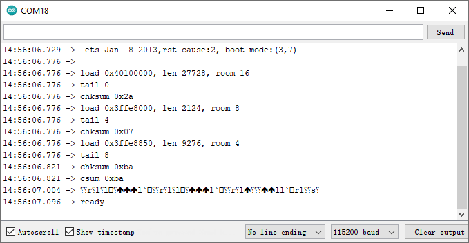

Note
Hello, welcome to the SunFounder Raspberry Pi & Arduino & ESP32 Enthusiasts Community on Facebook! Dive deeper into Raspberry Pi, Arduino, and ESP32 with fellow enthusiasts.
Why Join?
Expert Support: Solve post-sale issues and technical challenges with help from our community and team.
Learn & Share: Exchange tips and tutorials to enhance your skills.
Exclusive Previews: Get early access to new product announcements and sneak peeks.
Special Discounts: Enjoy exclusive discounts on our newest products.
Festive Promotions and Giveaways: Take part in giveaways and holiday promotions.
👉 Ready to explore and create with us? Click [here] and join today!
Firmware on the Wireless Module
The kit has been shipped in two versions. Which one you have decides whether there is anything to flash at all.
ESPC2-01 (current version)
There is nothing to flash. The module leaves the factory with the ESP-AT firmware already burned, and the kit’s sketches only send it AT commands. This chapter is here so you can check the module, not so you can reprogram it.
1. Check the version
Wire the module as in 1.3 Connecting the R4 board to Blynk, open the Serial Monitor at 115200, set the line ending to Both NL & CR (or send with Enter) and type:
AT+GMR
A healthy module answers with four lines and OK:
AT version:4.1.1.0(ba4dd0e - ESP32C2 - Jul 31 2025 08:37:25)
SDK version:v5.4.1-643-g8ad0d3d8f2f-dirty
compile time(7c092f9):Oct 22 2026 16:41:44
Bin version:v4.1.1.0(ESP32C2-2MB-BLE)
OK
Note
The line that tells you this is our build is compile time(7c092f9)....
Bin version:v4.1.1.0(ESP32C2-2MB-BLE) is printed by the official Bluetooth-only
build as well, so it is not proof on its own.
2. Check that the Wi-Fi part is really included
AT+CWMODE?
The answer must be:
+CWMODE:1
OK
An ERROR instead of +CWMODE:1 means the module carries a Bluetooth-only firmware,
so the Wi-Fi projects of this kit cannot work with it.
3. If the module does not answer at all
Go through these in order - nearly every case is one of them:
the adapter is powered from 5 V, not 3.3 V;
the external power supply (9-12 V) is plugged into the DC jack of the R4 Minima - on USB alone the module browns out while its radio starts;
TX of the module goes to RX of the board and RX to TX;
IO9 is left floating (do not pull it low - that is download mode);
press the reset button on the board and try
ATagain after about two seconds.
4. If the firmware is the wrong one
This cannot be repaired in the field: the module has to be taken out of the adapter,
put into download mode and flashed with the matching ESP-AT build. Please send the
AT+GMR output to service@sunfounder.com and we will replace the module.
ESP-01 (earlier version)
The sections below describe the earlier version of the kit, which uses an ESP-01 module. Unlike the ESPC2-01, that module can be re-flashed by the customer.
Re-burn the Firmware with R4
1. Build the circuit
Connect ESP8266 and Arduino UNO R4 board.

2. Upload the Following Code to R4
void setup() {
Serial.begin(115200);
Serial1.begin(115200);
}
void loop() {
if (Serial.available()) { // If anything comes in Serial (USB),
Serial1.write(Serial.read()); // read it and send it out Serial1 (pins 0 & 1)
}
if (Serial1.available()) { // If anything comes in Serial1 (pins 0 & 1)
Serial.write(Serial1.read()); // read it and send it out Serial (USB)
}
}
3. Burning the firmware
Follow the steps below to burn the firmware if you are using Windows.
Download firmware and burn-in tool.
After unzipping, you will see 4 files.
BAT_AT_V1.7.1.0_1M.bin: The firmware to burn to the ESP8266 module.esptool.exe: This is a command-line utility for Windows.install_r3.bat: This is the command package for Windows system, double click this file will run all the commands inside the file.install_r4.bat: Same asinstall_r3.bat, but dedicated to UNO R4 board.
Double click
install_r4.batto start the firmware burning. If you see the following prompt, the firmware has been installed successfully.
Note
If the burn-in fails, please check the following points.
Reset the ESP8266 module by inserting the RST on the ESP8266 Adapter to GND and then unplugging it.
Check if the wiring is correct.
Whether the computer has recognized your board properly, and make sure the port is not occupied.
Reopen the install.bat file.
To burn the firmware, follow these steps if you are using a Mac OS system.
Use the following commands to install Esptool. Esptool is a Python-based, open-source, platform-independent utility to communicate with the ROM bootloader in Espressif chips.
python3 -m pip install --upgrade pip python3 -m pip install esptool
If esptool is properly installed, it will output a message such as [usage: esptool] if you run
python3 -m esptool.Download firmware.
After unzipping, you will see 4 files.
BAT_AT_V1.7.1.0_1M.bin: The firmware to burn to the ESP8266 module.esptool.exe: This is a command-line utility for Windows.install_r3.bat: This is the command package for Windows system.install_r4.bat: Same asinstall_r3.bat, but dedicated to UNO R4 board.
Open a terminal and use the
cdcommand to go into the firmware folder you just downloaded, then run the following command to erase the existing firmware and re-burn the new firmware.python3 -m esptool --chip esp8266 --before no_reset_no_sync erase_flash python3 -m esptool --chip esp8266 --before no_reset_no_sync write_flash 0 "BAT_AT_V1.7.1.0_1M.bin"
If you see the following prompt, the firmware has been installed successfully.

Note
If the burn-in fails, please check the following points.
Reset the ESP8266 module by inserting the RST on the ESP8266 Adapter to GND and then unplugging it.
Check if the wiring is correct.
Whether the computer has recognized your board properly, and make sure the port is not occupied.
Reopen the install.bat file.
4. Test
On the basis of the original wiring, connect IO1 to 3V3.

You will be able to see information about the ESP8266 module if you click the magnifying glass icon(Serial Monitor) in the upper right corner and set the baud rate to 115200.

Note
If
readydoesn’t appear, you can try to reset the ESP8266 module(connect RST to GND) and re-open the Serial Monitor.
Click on NEWLINE DROPDOWN BOX, select
both NL & CRin the drop down option, enterAT, if it returns OK, it means ESP8266 has successfully established connection with R3 board.
Now you can continue to follow 1.0 Configuring the ESP8266 to set the working mode and baud rate of the ESP8266 module.
Re-burn the Firmware with R3
1. Build the circuit
Connect ESP8266 and SunFounder R3 board.

2. Burning the firmware
Follow the steps below to burn the firmware if you are using Windows.
Download firmware and burn-in tool.
After unzipping, you will see 4 files.
BAT_AT_V1.7.1.0_1M.bin: The firmware to burn to the ESP8266 module.esptool.exe: This is a command-line utility for Windows.install_r3.bat: This is the command package for Windows system, double click this file will run all the commands inside the file.install_r4.bat: Same asinstall_r3.bat, but dedicated to UNO R4 board.
Double click
install_r3.batto start the firmware burning. If you see the following prompt, the firmware has been installed successfully.
Note
If the burn-in fails, please check the following points.
Reset the ESP8266 module by inserting the RST on the ESP8266 Adapter to GND and then unplugging it.
Check if the wiring is correct.
Whether the computer has recognized your board properly, and make sure the port is not occupied.
Reopen the install.bat file.
To burn the firmware, follow these steps if you are using a Mac OS system.
Use the following commands to install Esptool. Esptool is a Python-based, open-source, platform-independent utility to communicate with the ROM bootloader in Espressif chips.
python3 -m pip install --upgrade pip python3 -m pip install esptool
If esptool is properly installed, it will output a message such as [usage: esptool] if you run
python3 -m esptool.Download firmware.
After unzipping, you will see 3 files.

BAT_AT_V1.7.1.0_1M.bin: The firmware to burn to the ESP8266 module.esptool.exe: This is a command-line utility for Windows.install_r3.bat: This is the command package for Windows system.install_r4.bat: Same asinstall_r3.bat, but dedicated to UNO R4 board.
Open a terminal and use the
cdcommand to go into the firmware folder you just downloaded, then run the following command to erase the existing firmware and re-burn the new firmware.python3 -m esptool --chip esp8266 --before default_reset erase_flash python3 -m esptool --chip esp8266 --before default_reset write_flash 0 "BAT_AT_V1.7.1.0_1M.bin"
If you see the following prompt, the firmware has been installed successfully.
Note
If the burn-in fails, please check the following points.
Reset the ESP8266 module by inserting the RST on the ESP8266 Adapter to GND and then unplugging it.
Check if the wiring is correct.
Whether the computer has recognized your board properly, and make sure the port is not occupied.
Reopen the install.bat file.
3. Test
On the basis of the original wiring, connect IO1 to 3V3.
You will be able to see information about the ESP8266 module if you click the magnifying glass icon(Serial Monitor) in the upper right corner and set the baud rate to 115200.
Note
If
readydoesn’t appear, you can try to reset the ESP8266 module(connect RST to GND) and re-open the Serial Monitor.
Click on NEWLINE DROPDOWN BOX, select
both NL & CRin the drop down option, enterAT, if it returns OK, it means ESP8266 has successfully established connection with R3 board.

Now you can continue to follow 1.0 Configuring the ESP8266 to set the working mode and baud rate of the ESP8266 module.